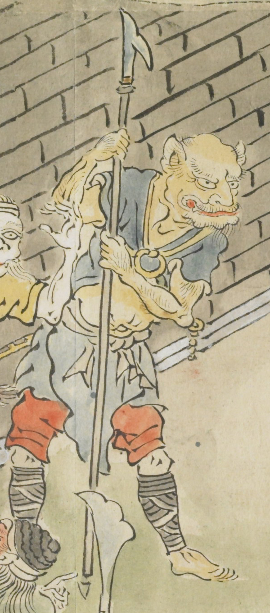

体が黄色く出臍である。赤い口を横に開いて、尖った耳をしている。青い衣を身にまとい、うす青色の腰巻を身につけている。赤い股引のようなものを履き、薙刀を構え持っている。
出典：親書誌：U426_nichibunken_0079：酒天童子絵巻；シュテンドウジエマキ／日付：2006／資源識別子：U426_nichibunken_0079_0001_0003
Copyright (c)2010- International Research Center for Japanese Studies, Kyoto, Japan. All rights reserved.